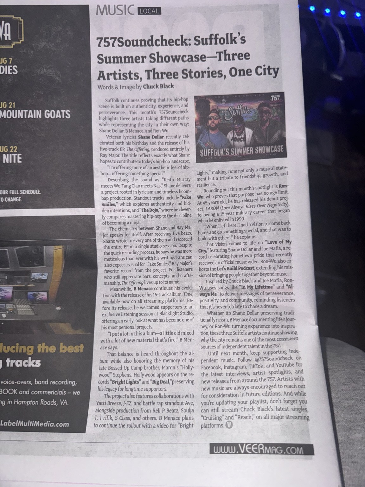

Suffolk’s Summer Showcase—Three Artists, Three Stories, One City
Three Suffolk artists explore lyricism, personal growth, legacy and hometown pride.
Read the Full Article
Suffolk continues proving that its hip-hop scene is built on authenticity, experience, and perseverance. This month's 757Soundcheck highlights three artists taking different paths while representing the city in their own way: Shane Dollar, B Menace, and Ron-Wu.
Veteran lyricist Shane Dollar recently celebrated both his birthday and the release of his five-track EP, The Offering, produced entirely by Ray Major. The title reflects exactly what Shane hopes to contribute to today's hip-hop landscape.
"I'm offering more of an aesthetic feel of hip-hop... offering something special."
Describing the sound as "Keith Murray meets Wu-Tang Clan meets Nas," Shane delivers a project rooted in lyricism and timeless boom-bap production. Standout tracks include "Fake Smiles," which explores authenticity and hidden intentions, and "The Dojo," where he cleverly compares mastering hip-hop to the discipline of becoming a ninja.
The chemistry between Shane and Ray Major speaks for itself. After receiving five beats, Shane wrote to every one of them and recorded the entire EP in a single studio session. Despite the quick recording process, he says he was more meticulous than ever with his writing. Fans can also expect a visual for "Fake Smiles," Ray Major's favorite record from the project. For listeners who still appreciate bars, concepts, and craftsmanship, The Offering lives up to its name.
Meanwhile, B Menace continues his evolution with the release of his 16-track album, Time, available now on all streaming platforms. Before its release, he welcomed supporters to an exclusive listening session at Blacklight Studio, offering an early look at what has become one of his most personal projects.
"I put a lot in this album—a little old mixed with a lot of new material that's fire," B Menace says.
That balance is heard throughout the album while also honoring the memory of his late Bossed Up Camp brother, Marquis "Hollywood" Stephens. Hollywood appears on the records "Bright Lights" and "Big Deal," preserving his legacy for longtime supporters.
The project also features collaborations with Yatti Breeze, J-EZ, and battle rap standout Ave, alongside production from Rell P Beatz, Soulja T, T-rifik, S Class, and others. B Menace plans to continue the rollout with a video for "Bright Lights," making Time not only a musical statement but a tribute to friendship, growth, and resilience.
Rounding out this month's spotlight is Ron-Wu, who proves that purpose has no age limit. At 45 years old, he has released his debut project, LARON (Love Always Rises Over Negativity), following a 15-year military career that began when he enlisted in 1999.
"When I left here, I had a vision to come back home and do something special, and that was to build with others," he explains.
That vision comes to life on "Love of My City," featuring Shane Dollar and Joe Mafia, a record celebrating hometown pride that recently received an official music video. Ron-Wu also co-hosts the Let's Build Podcast, extending his mission of bringing people together beyond music.
Inspired by Chuck Black and Joe Mafia, Ron-Wu uses songs like "In My Lifetime" and "Always Me" to deliver messages of perseverance, positivity, and community, reminding listeners that it's never too late to chase a dream.
Whether it's Shane Dollar preserving traditional lyricism, B Menace documenting life's journey, or Ron-Wu turning experience into inspiration, these three Suffolk artists continue showing why the city remains one of the most consistent sources of independent talent in the 757.
Until next month, keep supporting independent music. Follow @757Soundcheck on Facebook, Instagram, TikTok, and YouTube for the latest interviews, artist spotlights, and new releases from around the 757. Artists with new music are always encouraged to reach out for consideration in future editions. And while you're updating your playlist, don't forget you can still stream Chuck Black's latest singles, "Cruising" and "Reach," on all major streaming platforms.
As Published in VEER Magazine
Photograph of the original printed article, including the byline and magazine layout.
